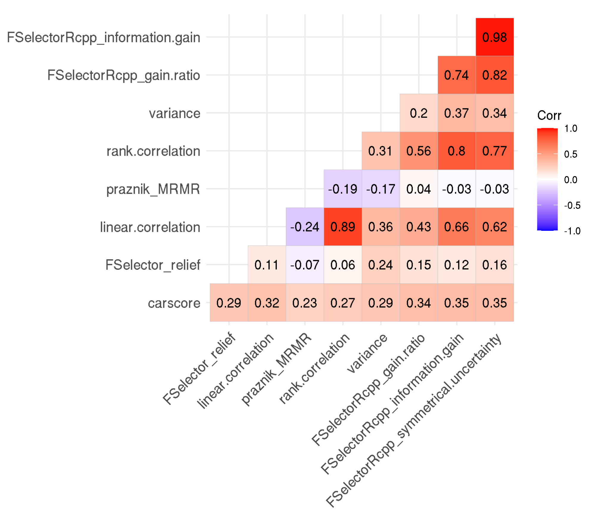
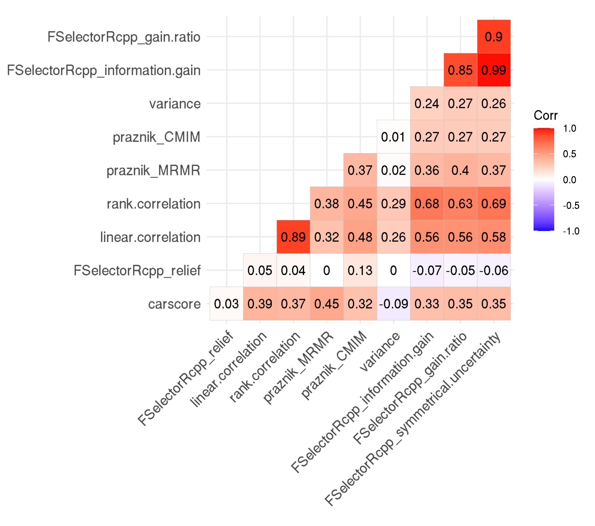
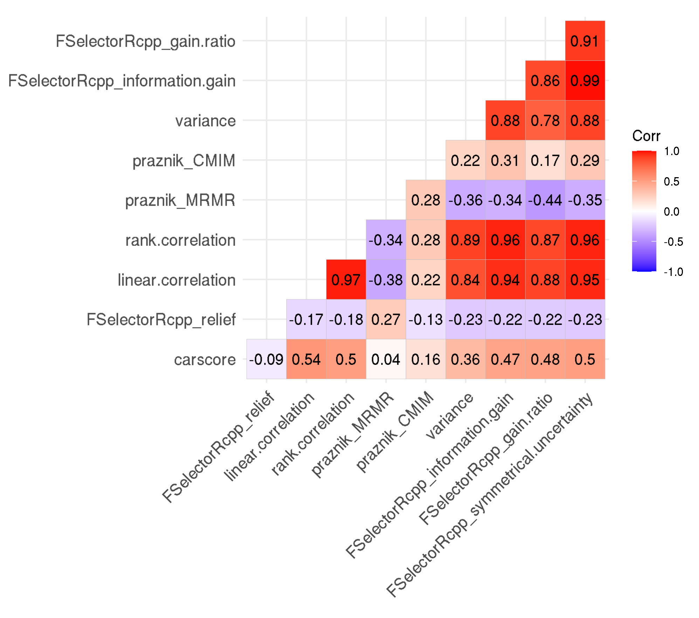
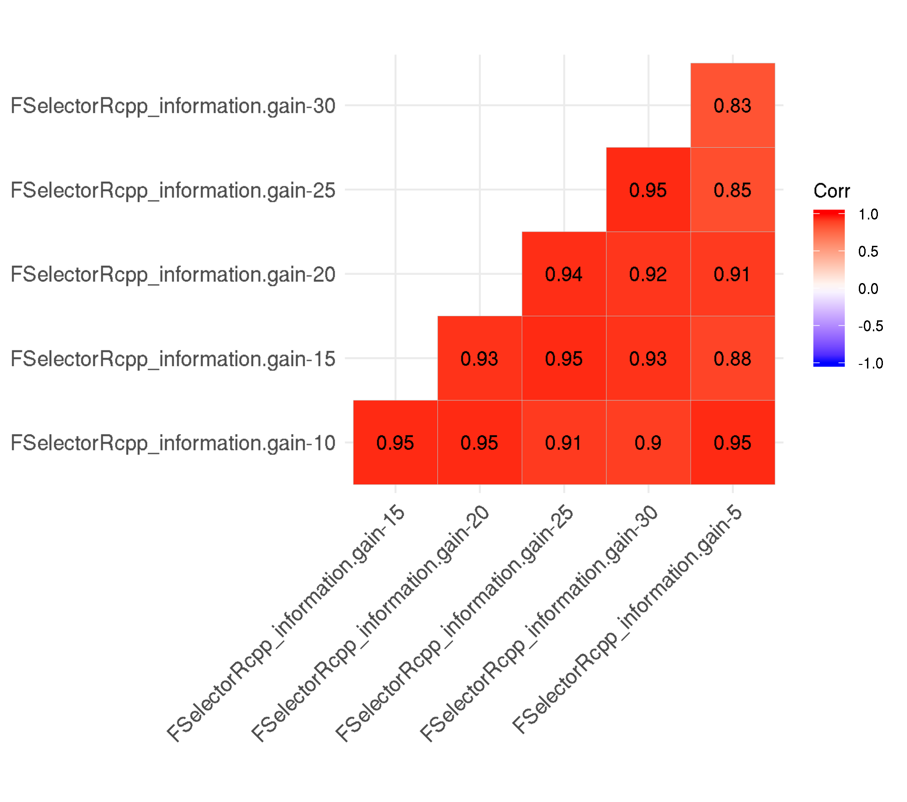

Last updated: 2021-11-02
Checks: 7 0
Knit directory: 2019-feature-selection/
This reproducible R Markdown analysis was created with workflowr (version 1.6.2). The Checks tab describes the reproducibility checks that were applied when the results were created. The Past versions tab lists the development history.
Great! Since the R Markdown file has been committed to the Git repository, you know the exact version of the code that produced these results.
Great job! The global environment was empty. Objects defined in the global environment can affect the analysis in your R Markdown file in unknown ways. For reproduciblity it’s best to always run the code in an empty environment.
The command set.seed(20190522) was run prior to running the code in the R Markdown file. Setting a seed ensures that any results that rely on randomness, e.g. subsampling or permutations, are reproducible.
Great job! Recording the operating system, R version, and package versions is critical for reproducibility.
Nice! There were no cached chunks for this analysis, so you can be confident that you successfully produced the results during this run.
Great job! Using relative paths to the files within your workflowr project makes it easier to run your code on other machines.
Great! You are using Git for version control. Tracking code development and connecting the code version to the results is critical for reproducibility.
The results in this page were generated with repository version 0d91238. See the Past versions tab to see a history of the changes made to the R Markdown and HTML files.
Note that you need to be careful to ensure that all relevant files for the analysis have been committed to Git prior to generating the results (you can use wflow_publish or wflow_git_commit). workflowr only checks the R Markdown file, but you know if there are other scripts or data files that it depends on. Below is the status of the Git repository when the results were generated:
Ignored files:
Ignored: .Rhistory
Ignored: .Rproj.user/
Ignored: .Ruserdata/
Ignored: .drake/
Ignored: .vscode/
Ignored: analysis/rosm.cache/
Ignored: data/
Ignored: inst/Benchmark for Filter Methods for Feature Selection in High-Dimensional Classification Data.pdf
Ignored: inst/study-area-map/._study-area.qgs
Ignored: inst/study-area-map/study-area.qgs~
Ignored: log/
Ignored: renv/library/
Ignored: renv/local/
Ignored: renv/staging/
Ignored: reviews/
Ignored: rosm.cache/
Unstaged changes:
Modified: _drake.R
Modified: code/070-benchmark-matrix.R
Note that any generated files, e.g. HTML, png, CSS, etc., are not included in this status report because it is ok for generated content to have uncommitted changes.
These are the previous versions of the repository in which changes were made to the R Markdown (analysis/filter-correlation.Rmd) and HTML (docs/filter-correlation.html) files. If you’ve configured a remote Git repository (see ?wflow_git_remote), click on the hyperlinks in the table below to view the files as they were in that past version.
| File | Version | Author | Date | Message |
|---|---|---|---|---|
| html | 0d91238 | pat-s | 2021-11-02 | Build site. |
| html | 6c153bc | pat-s | 2021-04-05 | Build site. |
| Rmd | 295d836 | pat-s | 2021-04-05 | wflow_publish(knitr_in(“analysis/filter-correlation.Rmd”), view = FALSE, |
| html | 5ed8cbe | pat-s | 2021-02-03 | Build site. |
| html | a953299 | pat-s | 2020-08-12 | Build site. |
| html | 8b5e422 | pat-s | 2020-08-05 | Build site. |
| html | 3b79fd7 | pat-s | 2020-03-03 | Build site. |
| Rmd | f26b9f1 | pat-s | 2020-03-03 | wflow_publish(knitr_in(“analysis/filter-correlation.Rmd”), view = |
| html | 93feaa4 | pat-s | 2020-02-25 | Build site. |
| html | 1054020 | pat-s | 2020-02-17 | Build site. |
| Rmd | 8f344fa | pat-s | 2020-02-17 | wflow_publish(knitr_in(“analysis/filter-correlation.Rmd”), view = |
| html | 25f06fc | pat-s | 2020-01-15 | Build site. |
| Rmd | 6210a04 | pat-s | 2020-01-15 | wflow_publish(knitr_in(“analysis/filter-correlation.Rmd”), view = |
| html | 7fae583 | pat-s | 2019-12-21 | Build site. |
| html | 27d4ac5 | pat-s | 2019-09-02 | Build site. |
| Rmd | 518d0cb | pat-s | 2019-09-01 | style files using tidyverse style |
| html | 7582c67 | pat-s | 2019-08-31 | Build site. |
| html | f9e682f | pat-s | 2019-08-29 | Build site. |
| html | dc1a55d | pat-s | 2019-08-12 | Build site. |
| html | 9a41e71 | pat-s | 2019-08-06 | add defoliation images |
| html | df85aba | pat-s | 2019-07-12 | Build site. |
| html | 3a44a95 | pat-s | 2019-07-10 | Build site. |
| html | 869c409 | pat-s | 2019-07-02 | Build site. |
| Rmd | 24e318f | pat-s | 2019-07-01 | update reports |
| html | 09f6292 | pat-s | 2019-06-30 | Build site. |
| Rmd | 824677a | pat-s | 2019-06-30 | workflowr::wflow_publish(“analysis/filter-correlation.Rmd”) |
| Rmd | aff143c | pat-s | 2019-06-28 | export filter-correlation images |
| html | e81f421 | pat-s | 2019-06-27 | Build site. |
| Rmd | 644b1d8 | pat-s | 2019-06-27 | wflow_publish(knitr_in(“analysis/filter-correlation.Rmd”), view = |
| html | 36d883b | pat-s | 2019-06-27 | Build site. |
| Rmd | 92a8a9d | pat-s | 2019-06-27 | wflow_publish(knitr_in(“analysis/filter-correlation.Rmd”), view = |
| html | db3955e | pat-s | 2019-06-27 | Build site. |
| Rmd | ca7205f | pat-s | 2019-06-27 | add new report |
| html | 2a058f1 | pat-s | 2019-06-26 | Build site. |
| Rmd | acfd762 | pat-s | 2019-06-26 | wflow_publish(knitr_in(“analysis/filter-correlation.Rmd”), view = |
Spearman’s rank correlation is used because rankings are compared.
The idea behind is was to analyze the correlation between filter rankings. We only wanted to included filters which have a somewhat unique ranking. Otherwise, when creating ensemble filters, certain filters would implicitly be weighted more than others.
Takeaway:
Only use one of “information gain”, “gain ratio”, “sym uncert”
Either use Spearman or Pearson correlation

| Version | Author | Date |
|---|---|---|
| 0d91238 | pat-s | 2021-11-02 |
| 6c153bc | pat-s | 2021-04-05 |
| 8b5e422 | pat-s | 2020-08-05 |
| 1054020 | pat-s | 2020-02-17 |
| 25f06fc | pat-s | 2020-01-15 |
| 7fae583 | pat-s | 2019-12-21 |
| 27d4ac5 | pat-s | 2019-09-02 |
| 7582c67 | pat-s | 2019-08-31 |
| f9e682f | pat-s | 2019-08-29 |
| dc1a55d | pat-s | 2019-08-12 |
| 3a44a95 | pat-s | 2019-07-10 |
| 869c409 | pat-s | 2019-07-02 |
| 09f6292 | pat-s | 2019-06-30 |

| Version | Author | Date |
|---|---|---|
| 0d91238 | pat-s | 2021-11-02 |
| 6c153bc | pat-s | 2021-04-05 |
| 8b5e422 | pat-s | 2020-08-05 |
| 1054020 | pat-s | 2020-02-17 |
| 25f06fc | pat-s | 2020-01-15 |
| 7fae583 | pat-s | 2019-12-21 |
| 27d4ac5 | pat-s | 2019-09-02 |
| 7582c67 | pat-s | 2019-08-31 |
| f9e682f | pat-s | 2019-08-29 |
| dc1a55d | pat-s | 2019-08-12 |
| 3a44a95 | pat-s | 2019-07-10 |
| 869c409 | pat-s | 2019-07-02 |

| Version | Author | Date |
|---|---|---|
| 0d91238 | pat-s | 2021-11-02 |
| 6c153bc | pat-s | 2021-04-05 |
| 8b5e422 | pat-s | 2020-08-05 |
| 1054020 | pat-s | 2020-02-17 |
| 25f06fc | pat-s | 2020-01-15 |
| 7fae583 | pat-s | 2019-12-21 |
| 27d4ac5 | pat-s | 2019-09-02 |
| 7582c67 | pat-s | 2019-08-31 |
| f9e682f | pat-s | 2019-08-29 |
| dc1a55d | pat-s | 2019-08-12 |
| 3a44a95 | pat-s | 2019-07-10 |
| 869c409 | pat-s | 2019-07-02 |
| 09f6292 | pat-s | 2019-06-30 |
FSelectorRcpp::information.gain()Analyzing the effect of a different nbins value on the filter values of filter “Information Gain”.
nbins = 5 vs. nbins = 30-> We decided to use with nbins = 10 in the analysis.
The hidden default of nbins when setting equal = TRUE in FSelectorRcpp::information_gain() is 5.

R version 4.0.4 (2021-02-15)
Platform: x86_64-pc-linux-gnu (64-bit)
Running under: CentOS Linux 7 (Core)
Matrix products: default
BLAS: /opt/spack/opt/spack/linux-centos7-x86_64/gcc-9.2.0/r-4.0.4-udi7a3ahhtokdcoyqdbndhebeupt7hid/rlib/R/lib/libRblas.so
LAPACK: /opt/spack/opt/spack/linux-centos7-x86_64/gcc-9.2.0/r-4.0.4-udi7a3ahhtokdcoyqdbndhebeupt7hid/rlib/R/lib/libRlapack.so
locale:
[1] LC_CTYPE=en_US.UTF-8 LC_NUMERIC=C
[3] LC_TIME=en_US.UTF-8 LC_COLLATE=en_US.UTF-8
[5] LC_MONETARY=en_US.UTF-8 LC_MESSAGES=en_US.UTF-8
[7] LC_PAPER=en_US.UTF-8 LC_NAME=C
[9] LC_ADDRESS=C LC_TELEPHONE=C
[11] LC_MEASUREMENT=en_US.UTF-8 LC_IDENTIFICATION=C
attached base packages:
[1] stats graphics grDevices datasets utils methods base
other attached packages:
[1] fs_1.5.0 glue_1.4.2 purrr_0.3.4 ggcorrplot_0.1.3
[5] ggplot2_3.3.3 tidyr_1.1.2 dplyr_1.0.4 usethis_2.0.0
[9] magrittr_2.0.1 drake_7.13.2
loaded via a namespace (and not attached):
[1] storr_1.2.5 progress_1.2.2 tidyselect_1.1.0 xfun_0.20
[5] reshape2_1.4.4 colorspace_2.0-0 vctrs_0.3.6 generics_0.1.0
[9] htmltools_0.5.1.1 yaml_2.2.1 rlang_0.4.10 R.oo_1.24.0
[13] later_1.1.0.1 pillar_1.4.7 txtq_0.2.3 withr_2.4.1
[17] R.utils_2.10.1 plyr_1.8.6 lifecycle_0.2.0 stringr_1.4.0
[21] munsell_0.5.0 gtable_0.3.0 workflowr_1.6.2 R.methodsS3_1.8.1
[25] evaluate_0.14 labeling_0.4.2 knitr_1.31 httpuv_1.5.5
[29] parallel_4.0.4 highr_0.8 Rcpp_1.0.6 renv_0.13.2
[33] backports_1.2.1 promises_1.1.1 scales_1.1.1 filelock_1.0.2
[37] farver_2.0.3 hms_1.0.0 digest_0.6.27 stringi_1.5.3
[41] rprojroot_2.0.2 grid_4.0.4 cli_2.4.0 tools_4.0.4
[45] base64url_1.4 tibble_3.0.6 crayon_1.4.0 whisker_0.4
[49] pkgconfig_2.0.3 ellipsis_0.3.1 data.table_1.13.6 prettyunits_1.1.1
[53] rmarkdown_2.6 rstudioapi_0.13 R6_2.5.0 igraph_1.2.6
[57] compiler_4.0.4 git2r_0.28.0